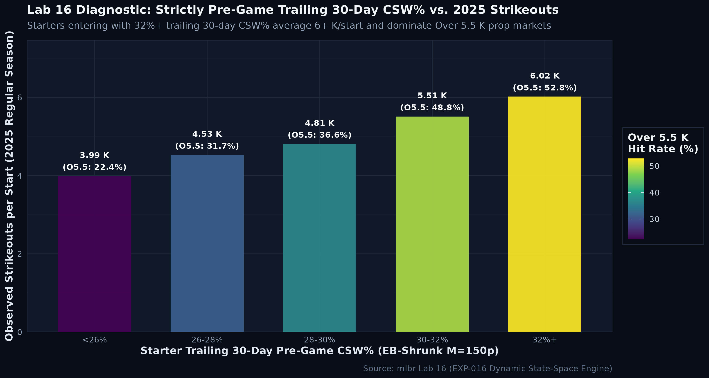

Lab 16 Work-Along: Dynamic In-Season State-Space Updates & Negative Binomial K-Props
A Step-by-Step Guided Workbook for Hands-On Learning in RStudio
TipHow to Use This Workbook
Open RStudio Server at http://192.168.10.1:8787, open mlbr.Rproj, and run workbooks/lab16_dynamic_statespace_negbin_k_props_workbook.R line-by-line with Ctrl + Enter. Companion Q-CRISP study: Study 16: Dynamic State-Space & Negative Binomial K-Props.
1. First-Principles Poisson vs. Negative Binomial Overdispersion
\[\text{Var}_{\text{NB}}(\text{SO}) = \mu + \frac{\mu^2}{\theta}, \qquad P(\text{SO} > k + 0.5) = 1 - F_{\text{NB}}(k;\; \mu, \theta)\]
For a \(\mu = 6.0\) K starter with \(\theta = 46.9\), Negative Binomial widens both tails relative to Poisson: Over 7.5 K increases from 25.60% \(\rightarrow\) 26.39%, and Under 2.5 K (early-hook/blowout tail) increases from 6.20% \(\rightarrow\) 7.33%.
2. Diagnostic Chart: Strictly Pre-Game Trailing 30-Day CSW% vs. 2025 Strikeouts

3. Mentor Checkpoints (Hands-On Exercises)
- Checkpoint 1 (Overdispersion Physics): Verify
var(sp_actual_so) / mean(sp_actual_so) == 1.28indynamic_statespace_negbin_kprops_2024_2025.parquet(season == 2025L). Why is starter strikeout variance 28% wider than Poisson? - Checkpoint 2 (Why 30d Pitcher CSW% Works While 30d Team xwOBA Adds Noise): Compare the
+0.0141Over 5.5 KAUC lift from trailing 30-day pitcherCSW%/K%against the+0.00095Full-Game ML Brier degradation from 30-day clubxwOBA. - Checkpoint 3 (Silver Tier Audit): Confirm
mean_csaa == 0across all 7 seasons (2020–2026,4.55Mpitches) indata/features/statcast_biomechanics/.